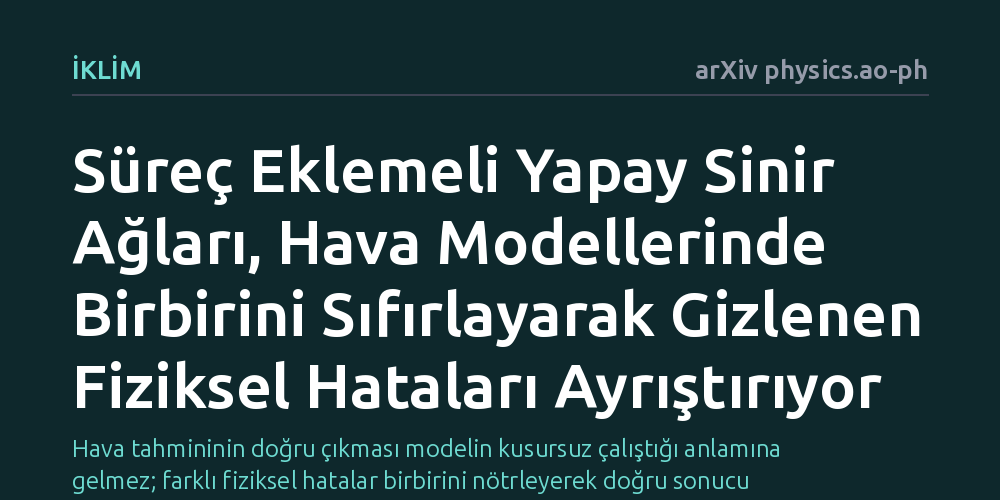

IKLIM · arXiv physics.ao-ph · 2026-10-16
Araştırmacılar, sayısal hava modellerinde birbirini sıfırlayarak gizlenen fiziksel süreç hatalarını ayrıştırmak için yeni bir yapay sinir ağı mimarisi geliştirdi. Tek sütunlu model deneylerinde bu yöntem, bulut ve konveksiyon gibi karmaşık süreçlerin hatalarını başarıyla birbirinden ayırarak tespit etti.
Hava tahmininin doğru çıkması modelin kusursuz çalıştığı anlamına gelmez; farklı fiziksel hatalar birbirini nötrleyerek doğru sonucu tesadüfen üretiyor olabilir ve bu yöntem o gizli kusurları gün yüzüne çıkarır.

Günlük hayatımızda baktığımız hava durumu tahminleri, arkasında devasa süper bilgisayarların çalıştırdığı sayısal atmosfer modellerini barındırır. Bu modeller güneş ışınımından bulut oluşumuna, rüzgardan yağışa kadar sayısız fiziksel süreci matematiksel denklemlerle simüle eder. Ancak bir tahminin gerçeğe uygun çıkması, modeldeki her fiziksel sürecin kusursuz işlediğini göstermez. Atmosfer biliminde 'birbirini telafi eden hatalar' olarak bilinen durumda, iki ayrı süreç zıt yönlerde büyük hatalar yaparak birbirinin açığını kapatır ve toplamda yanıltıcı bir doğruluk hissi yaratır.
Örneğin bir model bulutların havayı soğutma etkisini gereğinden fazla hesaplarken, dikey hava hareketlerinin ısıtma etkisini de aynı oranda abartabilir. Kağıt üzerinde sonuç doğru görünür; fakat iklim koşulları değiştiğinde ya da aşırı bir hava olayı yaklaştığında bu yapay denge çöker. Bu gizli dengesizlikleri bulup düzeltmek, atmosfer modellerinin gelecekteki güvenilirliği için hayati önem taşır.
Atmosferdeki fiziksel mekanizmalar birbiriyle öylesine sıkı bir nedensellik bağıyla bağlıdır ki, standart analiz yöntemleriyle hatanın tam olarak hangi süreçten kaynaklandığını teşhis etmek neredeyse imkansızdır. Bulut oluşumu ile dikey ısı taşınımı (konveksiyon) iç içe geçmiş durumdadır; birini düzeltmek için yapılan bir parametre ayarı diğer süreci tamamen rayından çıkarabilir.
Araştırmacılar bu kör düğümü çözmek amacıyla 'Süreç Eklemeli Yapay Sinir Ağı' (PANN) adını verdikleri yeni bir makine öğrenmesi çerçevesi önerdi. Klasik yapay zeka modelleri genellikle girdi ile çıktı arasında nedeni anlaşılamayan bir 'kara kutu' gibi çalışır. PANN mimarisinde ise ağ, bilerek fiziksel süreçlere denk düşen bağımsız kollara bölünür. Her kol yalnızca belirli bir sürecin hata eğilimini hesaplar ve tüm kolların toplamı genel model hatasını verir. Böylece sistem, toplam hatayı süreçler arasında paylaştırarak şeffaf bir teşhis aracı sunar.
Yöntemin geçerliliğini test etmek için araştırmacılar, Avrupa Orta Vadeli Hava Tahminleri Merkezi'nin kullandığı OpenIFS modelinin 'tek sütunlu' basitleştirilmiş sürümünü kullandı. Küresel dinamiklerin getirdiği karmaşıklığı dışarıda bırakan bu dikey atmosfer sütunu üzerinde, özellikle bulut ve konveksiyon süreçlerinin güçlü şekilde birbirine bağlı olduğu vaka çalışmaları incelendi.
Elde edilen ilk bulgular, PANN modelinin başarıyla eğitildiğinde toplam hatayı oluşturan münferit bileşenleri birbirinden ayırabildiğini gösterdi. Ağın kolları, hangi sürecin ne yönde ve ne büyüklükte bir sapmaya yol açtığını bağımsız olarak ortaya koyabildi. Bu sayede, geleneksel yaklaşımların göremediği gizli telafi mekanizmaları süreç bazında sayısallaştırılmış oldu.
Yazarlar, geliştirdikleri bu yöntemin meteorologların ve fizikçilerin yerini almayı hedeflemediğini özellikle vurguluyor. Amaç, insan zihninin ve geleneksel istatistiksel araçların model karmaşıklığı karşısında yetersiz kaldığı rejimlerde bilim insanlarının eline yeni bir teşhis merceği vermektir.
Fiziksel yapıya göre biçimlendirilmiş bu makine öğrenmesi yaklaşımı, karmaşık model davranışlarını doğrudan süreç düzeyindeki fiziksel açıklamalarla ilişkilendirir. Birbirini maskeleyen hataların bu şekilde gün yüzüne çıkarılması, yalnızca günlük hava tahminlerinin tutarlılığını artırmakla kalmayacak; aynı zamanda uzun vadeli iklim modellerinin de fiziksel gerçekliğe çok daha sadık kalmasına zemin hazırlayacaktır.